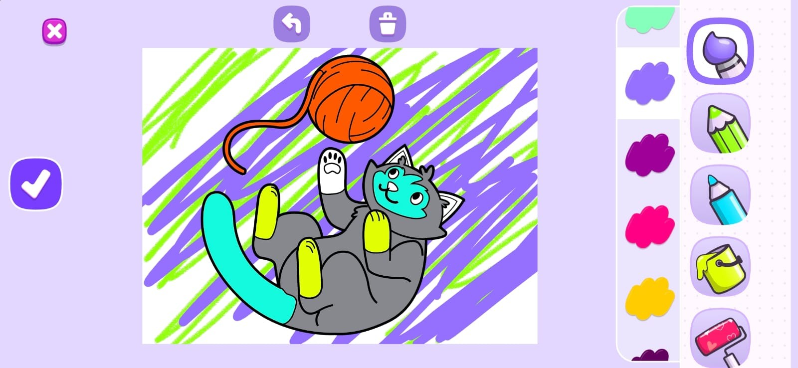
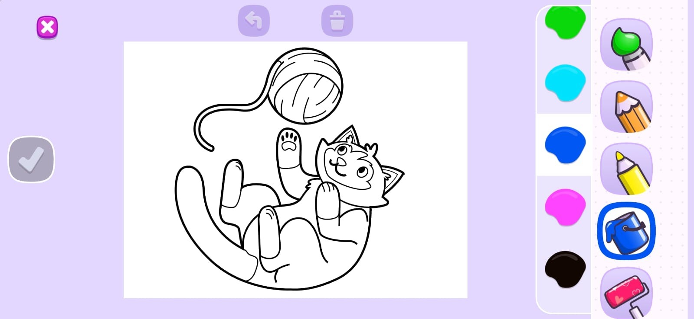
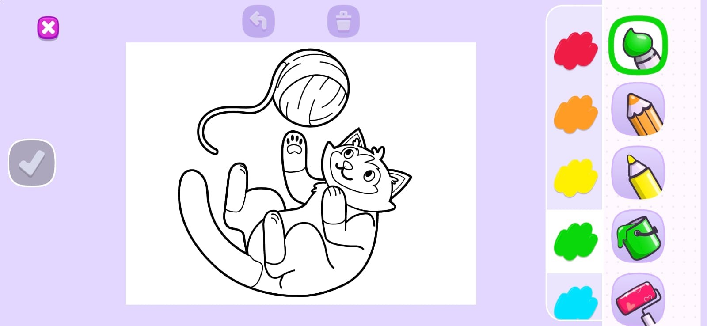

Drawing Game UI Overhaul
A layout and interaction overhaul for a legacy ABCmouse drawing game: every core control on screen, and clearer, reactive drawing tools.
- Studio
- Age of Learning
- Role
- Technical Artist
- Tools
- Unity
- Year
- 2026

Overview
A targeted UI overhaul for Art Engine, a legacy digital drawing game in the ABCmouse app, focused on layout responsiveness and visual feedback.
The original layout had a critical framing problem: the main Submit button was cut off the screen, buried beneath the drawing tools. The tool icons were also unclear and gave little visual feedback when selected.
I reconfigured the whole screen layout so every core interactive element, including Submit, is fully visible and accessible across device screens. I also refreshed the drawing tools with clearer assets and reactive animations that show which tool and which color are currently active.
Disclaimer: developed during my tenure at my previous studio. Property of the respective IP holders.
What I did
- Reconfigured the entire screen layout so all core controls, including the Submit button, are fully visible and accessible across device screens.
- Re-implemented the persistent, timed shaking animation on the Submit button so it draws the eye naturally toward progression.
- Refreshed the drawing tools UI (pencil, bucket tool, paintbrush, pen and eraser) with clearer asset presentation.
- Built reactive animations that highlight which tool and which color are currently active.
Gallery

